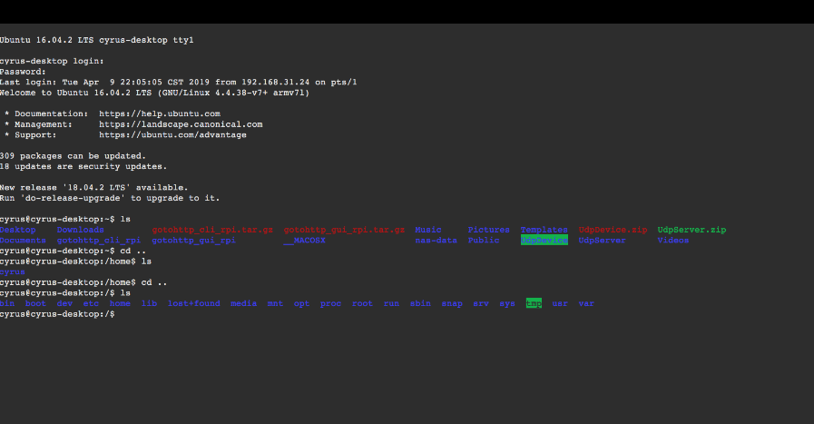

本文基本参照：https://www.cnblogs.com/kwongtai/p/6903420.html 对原文作者表示感谢
之前上写了个树莓派摄像头采集及传输的程序，有时在外网想调试，出租房没有公网IP，操作不了，所以就上网查了下资料，找到了两种解决方案：
一、gotohttp
首先就是gotohttp，在官网http://www.tohttp.com 下载相应系统的程序，执行得到一个id和控制码，回到官网输入就可以控制了。

优点：不需要vps，操作简单
缺点：窗口模式下，字体太小，不全屏看着难受
二、SSh反向代理
1、描述一下目前的机器状况，梳理梳理：
| 机器 | IP | 用户名 | 备注 |
|---|---|---|---|
| 树莓派 | 10.21.32.106 | gdut728 | 目标设备，处于内网 |
| 阿里云服务器 | 123.123.123.123 | root | 外网服务器，相当于桥梁的作用 |
2、解决方法
通俗地说：就是在树莓派上做到阿里云服务器的反向代理；然后在阿里云服务器上做正向的代理实现本地端口的转发
2.1 实现前的准备
每台都要安装ssh的客户端。
服务器和树莓派都装的ubuntu，都自带ssh。如果是使用其他版本Linux，请手动Google一下咯。
2.2 介绍一下使用到的ssh参数：
反向代理1
ssh -fCNR
正向代理1
ssh -fCNL
1 | -f 后台执行ssh指令 |
3. 首先在树莓派上面操作：
建立树莓派到服务器的反向代理，具体指令为1
ssh -fCNR [B机器IP或省略]:[B机器端口]:[A机器的IP]:[A机器端口] [登陆B机器的用户名@服务器IP]
在这里我使用了B机器的7280端口，以及A机器的22端口，按照上面的指令就是这样子的操作1
ssh -fCNR 7280:localhost:22 root@123.123.123.123
检验是否已经启动了可以使用ps aux | grep ssh指令来查看：
4. 接着在服务器上面操作:
建立服务器的正向代理，用来做转发，具体指令为1
ssh -fCNL [A机器IP或省略]:[A机器端口]:[B机器的IP]:[B机器端口] [登陆B机器的用户名@B机器的IP]
按照第3那里输入的指令，这里的B机器的端口和上面的B机器的端口是一致的，端口1234的也是服务器的。1
ssh -fCNL *:1234:localhost:7280 localhost
检验是否已经启动了可以使用ps aux | grep ssh指令来查看：
5. 展现奇迹的时候到了
至此我们都配置好了树莓派和服务器，那么我们就可以从一部外网的电脑登陆到内网里面去啦。鉴于我目前的电脑在内网，而服务器都是外网的，所以可以通过服务器连接到我内网的树莓派，具体指令为：1
ssh -p1234 gdut728@123.123.123.123
在此-p参数为指定登陆的IP，我们在上面指定了1234端口为转发端口，故用1234端口登陆，然后gdut728是内网树莓派的用户名，123.123.123.123为外网服务器的IP地址。
6.设置免密码登陆到内网
在内网的树莓派上面执行：1
ssh-copy-id 外网用户名@外网IP
按照之前我设定的端口，这个指令就是如下1
ssh-copy-id root@123.123.123.123

那以后这台内网的树莓派ssh登陆我外网的B机器就可以免密码登陆啦~
检验是否已经可以使用免密码登陆可以使用如下指令来检验：1
ssh root@123.123.123.123

7.设备开机自动启动反向代理
在树莓派的/etc/systemd/system路径下建立一个名为myssh.service的文件，并在其中输入以下内容。1
2
3
4
5
6
7
8
9
10
11
12
13
14[Unit]
Description=My Reverse SSH Service
ConditionPathExists=|/usr/bin
After=network.target
[Service]
User=root
ExecStart=/usr/bin/ssh -NTC -o ServerAliveInterval=60 -o ExitOnForwardFailure=yes -o StrictHostKeyChecking=no -i /home/cyrus/.ssh/id_rsa -R 7280:localhost:22 root@123.123.123 //端口及IP改为自己设置的
RestartSec=3
Restart=always
[Install]
WantedBy=multi-user.target
开机开启服务1
systemctl enable myssh.service